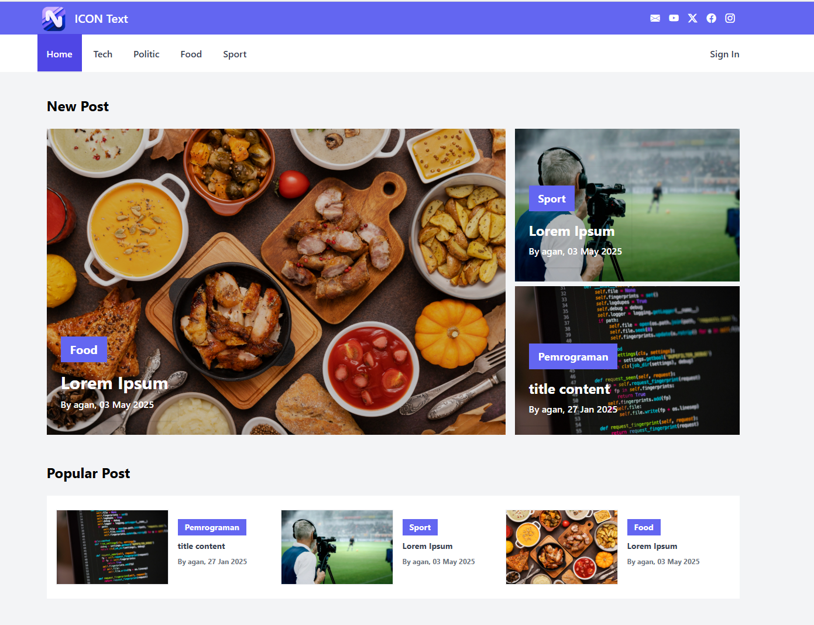
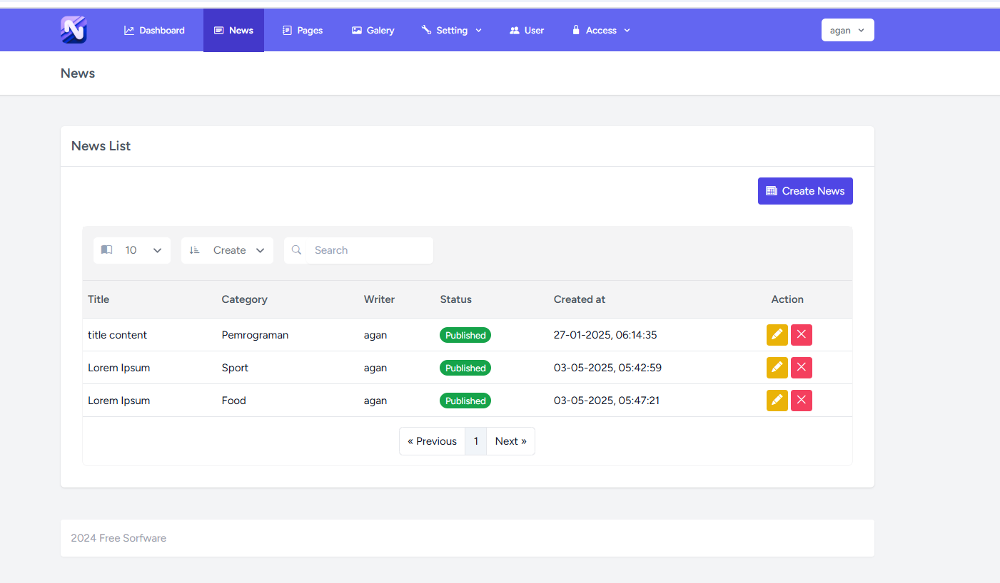
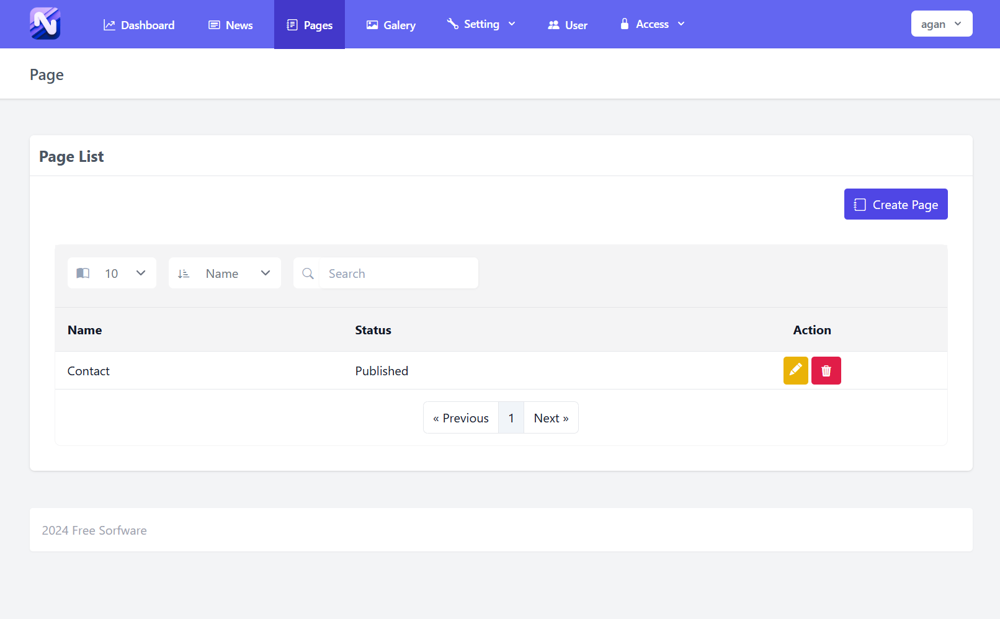
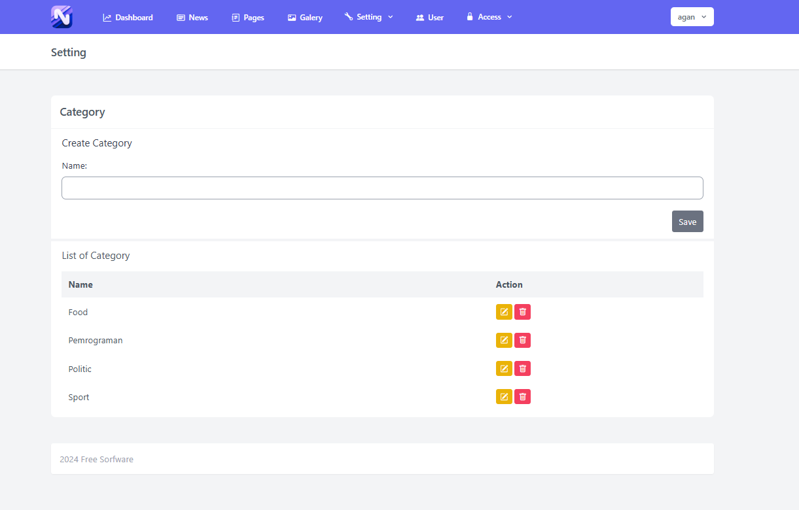
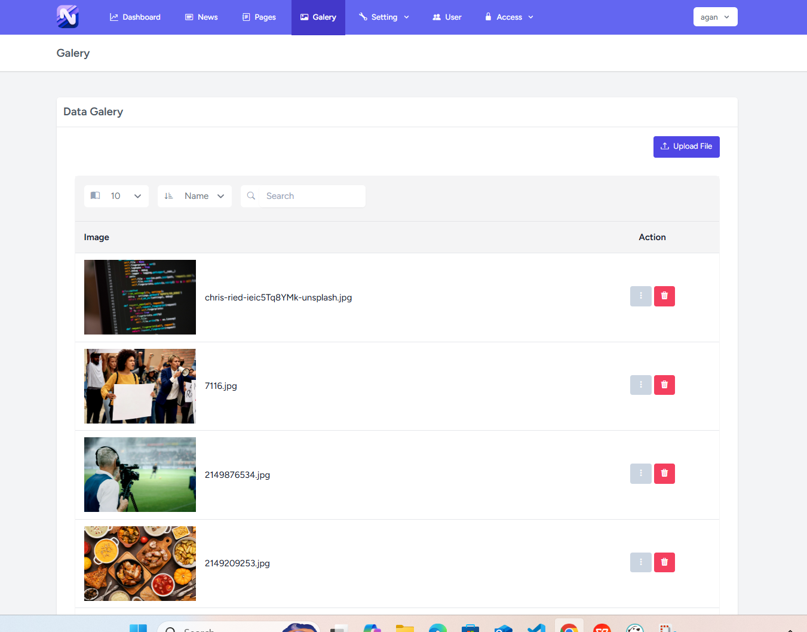

News App adalah aplikasi berbasis web yang dirancang untuk memudahkan pengguna dalam membuat dan mengelola situs berita, blog pribadi, maupun portal informasi menggunakan PHP dan framework Laravel.
Pengguna dapat menulis artikel, mengatur kategori berita, menambahkan gambar atau media pendukung, serta mengelola komentar pembaca dengan sistem autentikasi khusus untuk admin dan penulis.
Aplikasi ini bersifat open source dan gratis sehingga terbuka untuk dimodifikasi, dikembangkan, dan dijadikan media belajar pemrograman web.
Galeri Tampilan

Halaman utama portal berita

Dashboard admin manajemen artikel berita

Pengelolaan halaman statis situs

Penambahan dan pengaturan kategori berita

Pengelolaan galeri media dan gambar
1 / 5
Instalasi Aplikasi
Berikut langkah-langkah untuk menginstal aplikasi Laravel dari GitHub: